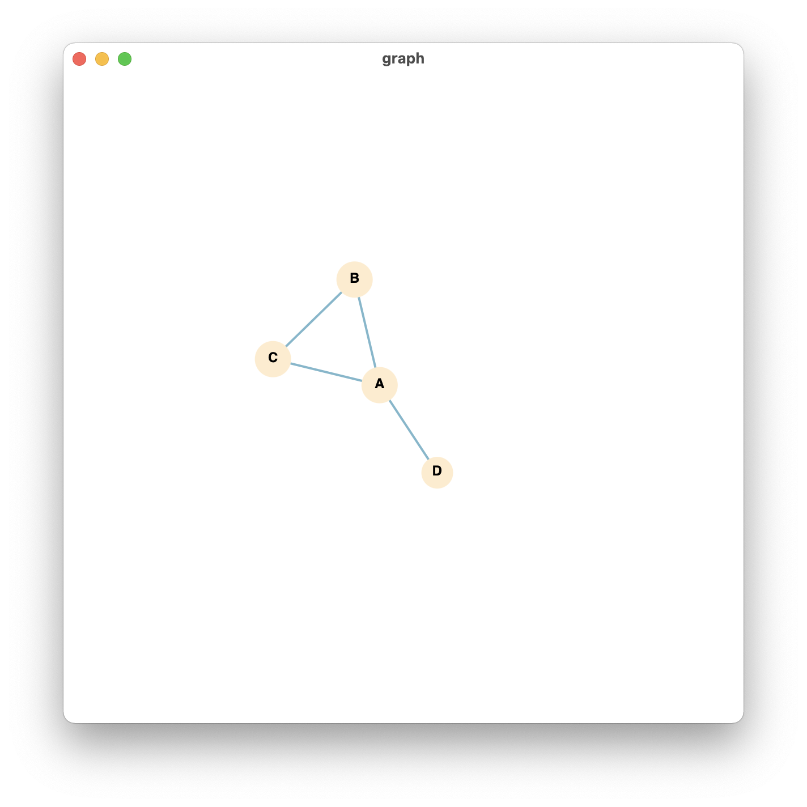

Data arrangement
cmap2graph()
cmap2graph(file, data_type, keyterms=None, read_from_file=True, encoding='utf-8', read_from=0, pfnet=False, max=None, min=None, r=np.inf)
Description
Convert a concept map (or a proximity/adjacency matrix) into a NetworkX graph.
Arguments
file: A list (see the data type below), or a file path of a .txt document. Theoretically, contents can be written in any language, as long as Python and your computer support it. If you try to open a file, then you might have to set a suitable encoding form, for example, if contents is written in Chinese, the .txt file better save as utf-8 encoding, and should be open as the same encoding too.
data_type: A string named “pair” or “array”. For the data type “pair”, “file” should be a list contained every propositions/edges/links/lines from a concept map, e.g., file = [[‘concept A’, ‘concept B’], [‘concept A’, ‘concept C’], …]. For the data type “array”, “file” should be a n*n proximity/adjacency matrix, n = number of key-terms, both row and column represent key-terms and value(i, j) represents the relationship of concept(i) and concept(j). Both rectangle and triangle matrix are acceptable.
keyterms: A list contained some string variables, each string is one key-term. All key-terms should be written in lower case, but upper case is also acceptable, as long as value of the parameter “as_lower” have been set as False.
read_from_file: if True, then manipulate the “file” parameter as a string, if False, then manipulate the “file” parameter as a file path.
encoding: default is “utf-8”, which supports most languages, such as English, Chinese, Korean, Arabic, etc.
read_from: From which row (line) to read when opening data from a file. Noted that the index of the first row (line) is 0.
pfnet: Whether the data should be converted into a undirected PFNet. The default vale is False.
max: A parameter used to convert the similarity matrix into the dissimilarity matrix if necessary. for example, if each value of the origin matrix ranges from 0 to 1, then “max” will be 1 and “min” will be 0.1. If values of both “max” and “min” are None (which is the default value), then the origin matrix will be used.
min*: See “max”.
r: A parameter of pathfinder algorithm. Considering that the mental perception of concept relation is the ordinal scale, we set “r” as infinity, see “Schvaneveldt, R. W., Durso, F. T., & Dearhold, D. W. (1989). Network structures in proximity data. Psychology of Learning and Motivation, 24, 249-284”.
Value
A NetworkX graph represented the Knowledge Structure.
Examples
import cookiemilk
# import data
my_cmap = [['A', 'B'], ['A', 'C'], ['A', 'D'], ['B', 'C']]
my_data = cookiemilk.cmap2graph(file=my_cmap, data_type='pair', read_from_file=False)
# visualization
cookiemilk.draw(my_data)
Result: 
text2graph()
text2graph(text, keyterms, synonym=None, read_from_file=True, name=None, encoding='utf-8', as_lower=True, pfnet=False, max=None, min=None, r=np.inf)
Description
Convert a text into a NetworkX graph.
Arguments
text: a string or a file path of a .txt document. Theoretically, contents can be written in any language, as long as Python and your computer support it. If you try to open a file, then you might have to set a suitable encoding form, for example, if contents is written in Chinese, the .txt file better save as utf-8 encoding, and should be open as the same encoding too.
keyterms: a list contained some string variables, each string is one key-term. All key-terms should be written in lower case, but upper case is also acceptable, as long as value of the parameter “as_lower” have been set as False.
synonym: a dictionary. Each key is a term form key-terms list, and value can be a list contained synonym(s), e.g., synonym={‘a’:[‘a1’, ‘a2’], ‘b’:[‘b1’, ‘b2’]}.
read_from_file: if True, then manipulate the “text” parameter as a string, if False, then manipulate the “text” parameter as a file path.
encoding: default is “utf-8”, which supports most languages, such as English, Chinese, Korean, Arabic, etc.
name: name of Graph.
as_lower: convert every character in the text into lower case. Defalut is False.
pfnet: converts the output into a undirected PFNet if set as True.
max: a parameter used to convert the similarity matrix into the dissimilarity matrix if necessary. for example, if each value of the origin matrix ranges from 0 to 1, then “max” will be 1 and “min” will be 0.1. If values of both “max” and “min” are None (which is the default value), then the origin matrix will be used.
min: see “max”.
r: a parameter of pathfinder algorithm. Considering that the mental perception of concept relation is the ordinal scale, we set “r” as infinity, see “Schvaneveldt, R. W., Durso, F. T., & Dearhold, D. W. (1989). Network structures in proximity data. Psychology of Learning and Motivation, 24, 249-284”.
Value
A NetworkX graph represented the Knowledge Structure.
Examples
import cookiemilk
# import data
my_text = 'A is an alternate name for B, and it relates to C. While C relates to A, it also is an important reason for D.'
my_keyterms = ['A', 'B', 'C', 'D']
my_data = cookiemilk.text2graph(text=my_text, keyterms=my_keyterms, read_from_file=False, as_lower=False)
# visualization
cookiemilk.draw(my_data)
Result:
read_file()
read_file(filepath, encoding='utf-8')
Description
Read contents from a .txt file into a list. Note: This function is called by cmap2graph() and text2graph().
get_data_files_name
get_data_files_name(init_file_path)
Description
Read multiple files under a given folder. Note: This function is called by cmap2graph() and text2graph().
graph2prxfile()
graph2prxfile(graph, filetype, filename, keyterm_list=None, encoding='UTF-8')
Description
Save a graph as a .prx file.
Arguments
graph: a NetworkX df_graphs.
filetype: a string specifying the data type to save, can be “pair” or “array”.
filename: filename of output file.
keyterm_list: a list of key-terms.
encoding: default is “utf-8”, which supports most languages, such as English, Chinese, Korean, Arabic, etc.
Examples
import cookiemilk
# import data
my_cmap = [['A', 'B'], ['A', 'C'], ['A', 'D'], ['B', 'C']]
my_data = cookiemilk.cmap2graph(file=my_cmap, data_type='pair', read_from_file=False)
# output
cookiemilk.graph2prxfile(my_data, 'pair', 'my_output')